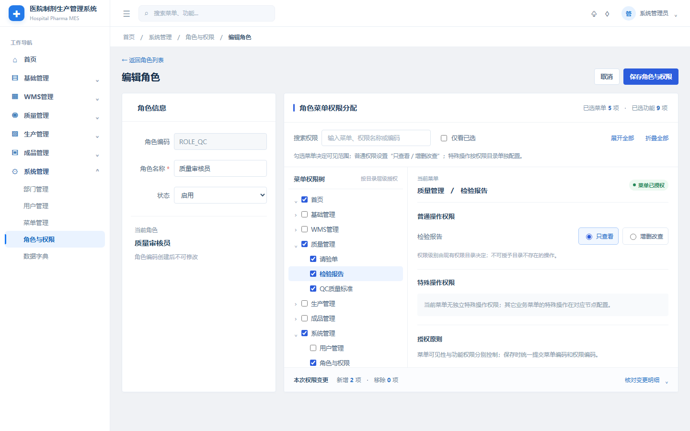

医院制剂 MES / 统一 Global UI V2 / T2 编辑角色

左侧 230 px，顶部 56 px，面包屑 42 px。七域菜单共用数据库配置与权限过滤，不增加第二套菜单。
现有角色编辑路由；左侧角色信息，右侧菜单授权树与功能权限。同一路由承载权限配置。
角色编码只读、角色名称可编辑、状态选择。所有标签与控件水平同行，禁用变更原因输入与版本控件。
菜单勾选控制可见性；普通权限仅“只查看 / 增删改查”；特殊操作从真实权限目录单独配置，不造权限代码。
权限搜索、仅看已选、树展开/折叠、变更明细、保存/取消和离开提醒；受当前角色权限与组织隔离约束。
后续原型以演示数据模拟；正式 MES 继续使用原 API 与乐观锁、权限检查，不直接套用模拟值。
原图 1440 × 900；侧栏 230 px；顶栏 56 px；内容留白 24 px；主区左右两列；输入框高约 35 px；文本 12–15 px；统一蓝色主按钮；白色轻边框卡片。
桌面与窄屏后续在交互原型阶段按 1440 / 1280 / 900 / 375 视口验证。
权威基线：FINAL BASELINE v1.0.23 + approved DCP；Global UI Design System V2；Page Template Standard V2。
接口绑定：/roles、/permissions、/menus、/roles/{id}/permissions 和 /auth/navigation 的既有契约。所有角色及勾选状态均为设计示例，非当前数据库事实。